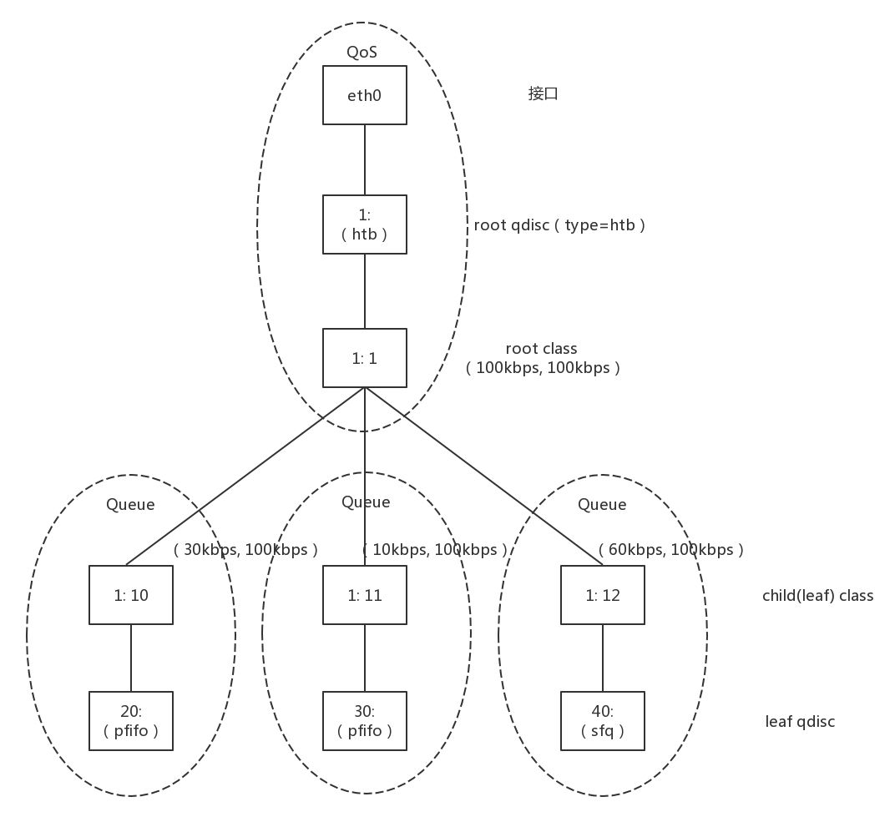

27 | 云中的网络QoS：邻居疯狂下电影，我该怎么办？
在小区里面，是不是经常有住户不自觉就霸占公共通道，如果你找他理论，他的话就像一个相声《楼道曲》说的一样：“公用公用，你用我用，大家都用，我为什么不能用？”。
除此之外，你租房子的时候，有没有碰到这样的情况：本来合租共享 WIFI，一个人狂下小电影，从而你网都上不去，是不是很懊恼？
在云平台上，也有这种现象，好在有一种流量控制的技术，可以实现QoS（Quality of Service），从而保障大多数用户的服务质量。
对于控制一台机器的网络的 QoS，分两个方向，一个是入方向，一个是出方向。
其实我们能控制的只有出方向，通过 Shaping，将出的流量控制成自己想要的模样。而进入的方向是无法控制的，只能通过 Policy 将包丢弃。
在 Linux 下，可以通过 TC 控制网络的 QoS，主要就是通过队列的方式。
第一大类称为无类别排队规则（Classless Queuing Disciplines）。还记得我们讲ip addr的时候讲过的pfifo_fast，这是一种不把网络包分类的技术。

pfifo_fast 分为三个先入先出的队列，称为三个 Band。根据网络包里面 TOS，看这个包到底应该进入哪个队列。TOS 总共四位，每一位表示的意思不同，总共十六种类型。
通过命令行 tc qdisc show dev eth0，可以输出结果 priomap，也是十六个数字。在 0 到 2 之间，和 TOS 的十六种类型对应起来，表示不同的 TOS 对应的不同的队列。其中 Band 0 优先级最高，发送完毕后才轮到 Band 1 发送，最后才是 Band 2。
另外一种无类别队列规则叫作随机公平队列（Stochastic Fair Queuing）。

会建立很多的 FIFO 的队列，TCP Session 会计算 hash 值，通过 hash 值分配到某个队列。在队列的另一端，网络包会通过轮询策略从各个队列中取出发送。这样不会有一个 Session 占据所有的流量。
当然如果两个 Session 的 hash 是一样的，会共享一个队列，也有可能互相影响。hash 函数会经常改变，从而 session 不会总是相互影响。
还有一种无类别队列规则称为令牌桶规则（TBF，Token Bucket Filte）。

所有的网络包排成队列进行发送，但不是到了队头就能发送，而是需要拿到令牌才能发送。
令牌根据设定的速度生成，所以即便队列很长，也是按照一定的速度进行发送的。
当没有包在队列中的时候，令牌还是以既定的速度生成，但是不是无限累积的，而是放满了桶为止。设置桶的大小为了避免下面的情况：当长时间没有网络包发送的时候，积累了大量的令牌，突然来了大量的网络包，每个都能得到令牌，造成瞬间流量大增。
另外一大类是基于类别的队列规则（Classful Queuing Disciplines），其中典型的为分层令牌桶规则（HTB， Hierarchical Token Bucket）。
HTB 往往是一棵树，接下来我举个具体的例子，通过 TC 如何构建一棵 HTB 树来带你理解。

使用 TC 可以为某个网卡 eth0 创建一个 HTB 的队列规则，需要付给它一个句柄为（1:）。
这是整棵树的根节点，接下来会有分支。例如图中有三个分支，句柄分别为（:10）、（:11）、（:12）。最后的参数 default 12，表示默认发送给 1:12，也即发送给第三个分支。
tc qdisc add dev eth0 root handle 1: htb default 12
对于这个网卡，需要规定发送的速度。一般有两个速度可以配置，一个是rate，表示一般情况下的速度；一个是ceil，表示最高情况下的速度。对于根节点来讲，这两个速度是一样的，于是创建一个 root class，速度为（rate=100kbps，ceil=100kbps）。
tc class add dev eth0 parent 1: classid 1:1 htb rate 100kbps ceil 100kbps
接下来要创建分支，也即创建几个子 class。每个子 class 统一有两个速度。三个分支分别为（rate=30kbps，ceil=100kbps）、（rate=10kbps，ceil=100kbps）、（rate=60kbps，ceil=100kbps）。
tc class add dev eth0 parent 1:1 classid 1:10 htb rate 30kbps ceil 100kbps
tc class add dev eth0 parent 1:1 classid 1:11 htb rate 10kbps ceil 100kbps
tc class add dev eth0 parent 1:1 classid 1:12 htb rate 60kbps ceil 100kbps
你会发现三个 rate 加起来，是整个网卡允许的最大速度。
HTB 有个很好的特性，同一个 root class 下的子类可以相互借流量，如果不直接在队列规则下面创建一个 root class，而是直接创建三个 class，它们之间是不能相互借流量的。借流量的策略，可以使得当前不使用这个分支的流量的时候，可以借给另一个分支，从而不浪费带宽，使带宽发挥最大的作用。
最后，创建叶子队列规则，分别为fifo和sfq。
tc qdisc add dev eth0 parent 1:10 handle 20: pfifo limit 5
tc qdisc add dev eth0 parent 1:11 handle 30: pfifo limit 5
tc qdisc add dev eth0 parent 1:12 handle 40: sfq perturb 10
基于这个队列规则，我们还可以通过 TC 设定发送规则：从 1.2.3.4 来的，发送给 port 80 的包，从第一个分支 1:10 走；其他从 1.2.3.4 发送来的包从第二个分支 1:11 走；其他的走默认分支。
tc filter add dev eth0 protocol ip parent 1:0 prio 1 u32 match ip src 1.2.3.4 match ip dport 80 0xffff flowid 1:10
tc filter add dev eth0 protocol ip parent 1:0 prio 1 u32 match ip src 1.2.3.4 flowid 1:11
我们讲过，使用 OpenvSwitch 将云中的网卡连通在一起，那如何控制 QoS 呢？
就像我们上面说的一样，OpenvSwitch 支持两种：
ovs-vsctl set Interface tap0 ingress_policing_rate=100000
ovs-vsctl set Interface tap0 ingress_policing_burst=10000
我们构建一个拓扑图，来看看 OpenvSwitch 的 QoS 是如何工作的。

首先，在 port 上可以创建 QoS 规则，一个 QoS 规则可以有多个队列 Queue。

ovs-vsctl set port first_br qos=@newqos -- --id=@newqos create qos type=linux-htb other-config:max-rate=10000000 queues=0=@q0,1=@q1,2=@q2 -- --id=@q0 create queue other-config:min-rate=3000000 other-config:max-rate=10000000 -- --id=@q1 create queue other-config:min-rate=1000000 other-config:max-rate=10000000 -- --id=@q2 create queue other-config:min-rate=6000000 other-config:max-rate=10000000
上面的命令创建了一个 QoS 规则，对应三个 Queue。min-rate 就是上面的 rate，max-rate 就是上面的 ceil。通过交换机的网络包，要通过流表规则，匹配后进入不同的队列。然后我们就可以添加流表规则 Flow(first_br 是 br0 上的 port 5)。
ovs-ofctl add-flow br0 "in_port=6 nw_src=192.168.100.100 actions=enqueue:5:0"
ovs-ofctl add-flow br0 "in_port=7 nw_src=192.168.100.101 actions=enqueue:5:1"
ovs-ofctl add-flow br0 "in_port=8 nw_src=192.168.100.102 actions=enqueue:5:2"
接下来，我们单独测试从 192.168.100.100，192.168.100.101，192.168.100.102 到 192.168.100.103 的带宽的时候，每个都是能够打满带宽的。
如果三个一起测试，一起狂发网络包，会发现是按照 3:1:6 的比例进行的，正是根据配置的队列的带宽比例分配的。
如果 192.168.100.100 和 192.168.100.101 一起测试，发现带宽占用比例为 3:1，但是占满了总的流量，也即没有发包的 192.168.100.102 有 60% 的带宽被借用了。
如果 192.168.100.100 和 192.168.100.102 一起测试，发现带宽占用比例为 1:2。如果 192.168.100.101 和 192.168.100.102 一起测试，发现带宽占用比例为 1:6。
好了，这一节就讲到这里了，我们来总结一下。
最后，给你留两个思考题。